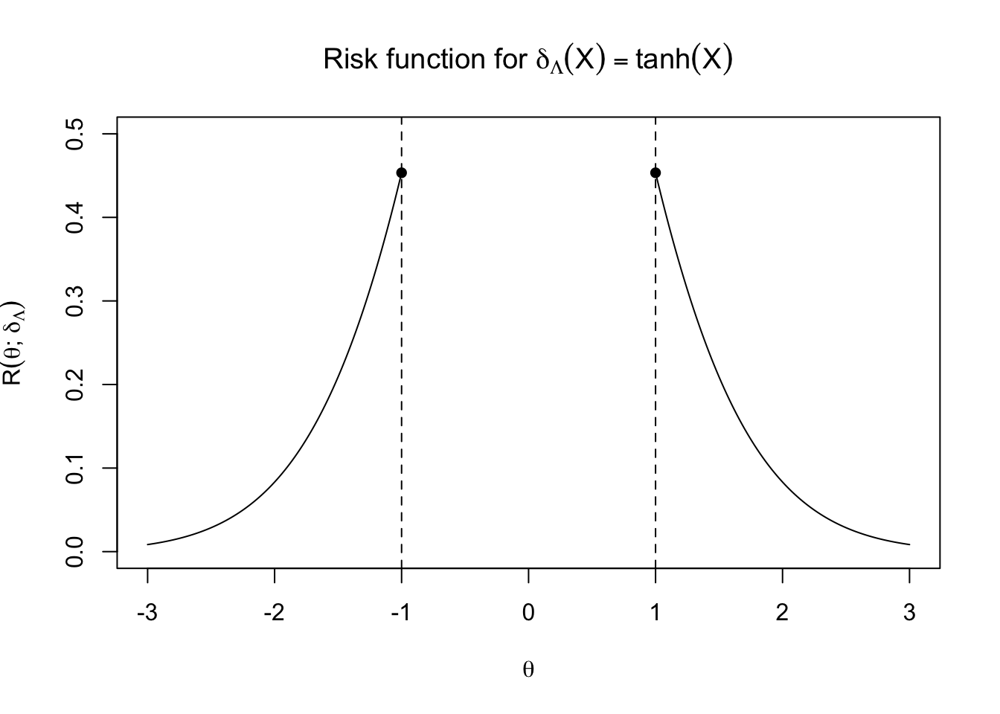
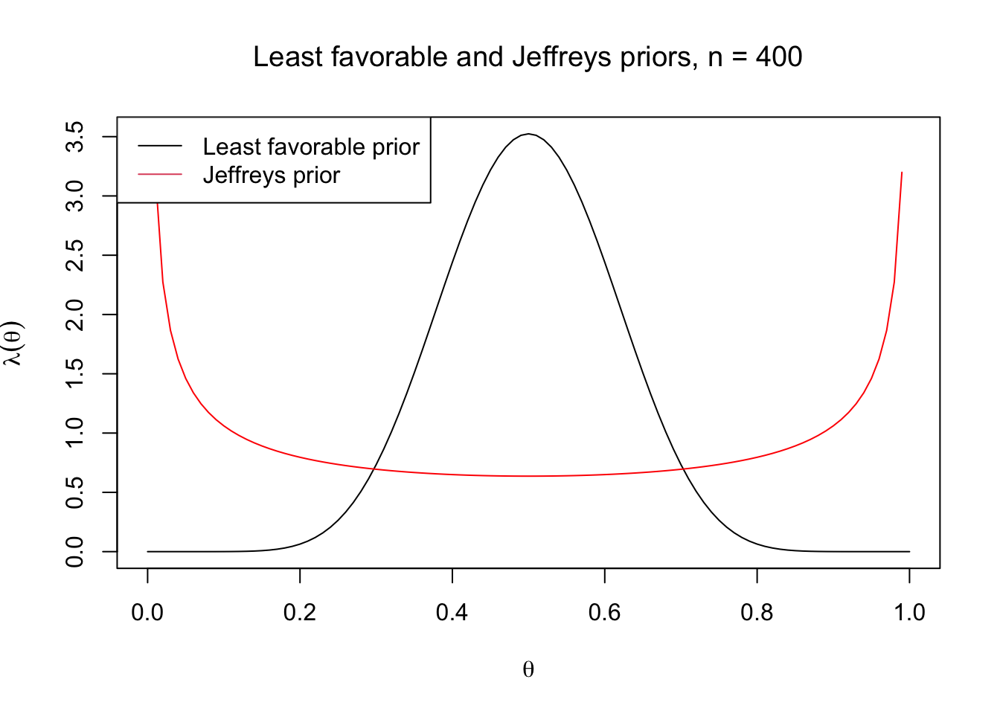
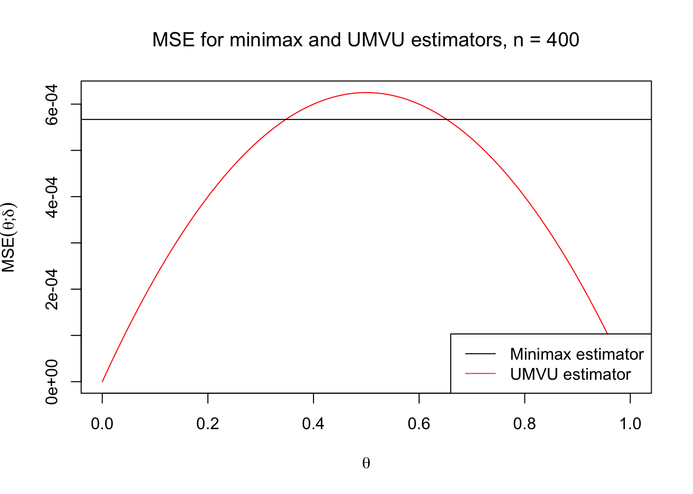

Minimax Estimation
\[ \newcommand{\cB}{\mathcal{B}} \newcommand{\cF}{\mathcal{F}} \newcommand{\cN}{\mathcal{N}} \newcommand{\cP}{\mathcal{P}} \newcommand{\cX}{\mathcal{X}} \newcommand{\EE}{\mathbb{E}} \newcommand{\PP}{\mathbb{P}} \newcommand{\RR}{\mathbb{R}} \newcommand{\ZZ}{\mathbb{Z}} \newcommand{\td}{\,\textrm{d}} \newcommand{\simiid}{\stackrel{\textrm{i.i.d.}}{\sim}} \newcommand{\simind}{\stackrel{\textrm{ind.}}{\sim}} \newcommand{\eqas}{\stackrel{\textrm{a.s.}}{=}} \newcommand{\eqPas}{\stackrel{\cP\textrm{-a.s.}}{=}} \newcommand{\eqmuas}{\stackrel{\mu\textrm{-a.s.}}{=}} \newcommand{\eqD}{\stackrel{D}{=}} \newcommand{\indep}{\perp\!\!\!\!\perp} \DeclareMathOperator*{\minz}{minimize\;} \DeclareMathOperator*{\maxz}{maximize\;} \DeclareMathOperator*{\argmin}{argmin\;} \DeclareMathOperator*{\argmax}{argmax\;} \newcommand{\Var}{\textnormal{Var}} \newcommand{\Cov}{\textnormal{Cov}} \newcommand{\Corr}{\textnormal{Corr}} \newcommand{\ep}{\varepsilon} \]
\(\DeclareMathOperator*{\minimize}{\textnormal{minimize}}\)
1 Minimax risk and estimator
1.1 Definitions
Since introducing the basic problem in Lecture 3 of how to choose between estimators, we have studied two possible answers: First, to constrain our choice of estimator to be unbiased, which in the presence of a complete sufficient statistic narrows our choices to (at most) one good unbiased estimator for any estimand; and second, to summarize risk functions by their average-case risk, which leads us to Bayes estimators. In this lecture, we will consider another idea: to minimize the worst-case risk: \[ \minimize_{\delta} \sup_{\theta\in\Theta} R(\theta;\delta) \] The (possibly unattainable) infimum of all estimators’ sup-risks is called the minimax risk of the estimation problem \[ r^* = \inf_\delta \sup_\theta R(\theta;\delta), \] and an estimator \(\delta^*\) is called minimax if it achieves the minimax risk, i.e. if \[ \sup_\theta R(\theta; \delta^*) = r^*. \] Whether or not a minimax estimator exists, or we want to use it, it can be informative to investigate a problem’s minimax risk as a measure of how difficult the problem is, and in particular how it changes with the sample size, problem dimension, or other problem parameters. Thus, it is useful to be able to bound \(r^*\) from above and below.
1.2 Game theoretic interpretation
We can think of the minimax risk as the expected payoff in an adversarial zero-sum game between the analyst, who chooses the estimator to make the risk as small as possible, and “Nature,” who waits to see what estimator the analyst chooses and then assigns the parameter to make the risk as large as possible. If the analyst plays first and selects the estimator \(\delta\), then Nature will always select the value of \(\theta\) that maximizes \(R(\theta;\delta)\); then \(r^*\) corresponds to the attained risk in this game, and \(\delta^*\) to the analyst’s optimal move.
What if Nature played first? If the analyst could know \(\theta\) while choosing \(\delta\), the problem would be too easy, but it becomes more interesting if we allow Nature to choose a mixed strategy of sampling \(\theta \sim \Lambda\). Then, an analyst who could see the prior (but not the realized value of \(\theta\)) would play the Bayes estimator \(\delta_\Lambda\) and attain the Bayes risk.
Intuitively, the analyst is in a better position when playing second than when playing first, and indeed the Bayes risk for any \(\Lambda\) is a lower bound for the minimax risk: \[ r_\Lambda \;=\; \inf_{\delta} \int_\Theta R(\theta;\delta)\;d\Lambda(\theta) \;\leq\; \inf_{\delta} \sup_\theta R(\theta; \delta) \;=\; r^*, \] since any estimator’s average-case risk is no larger than its worst-case risk.
To optimize this lower bound on \(r^*\), we can try to find Nature’s Nash equilibrium strategy.
1.3 Least Favorable Priors
Since \(r_\Lambda\) for any prior \(\Lambda\) lower-bounds the minimax risk, we have \(\sup_\Lambda r_\Lambda \leq r^*\). If a prior \(\Lambda^*\) attains this supremum, we call it least favorable prior. When the supremum is not attainable by any prior, we can still attain it in the limit by defining a sequence of priors \(\Lambda_1,\Lambda_2,\ldots\) with \(r_{\Lambda_n}\to \sup_\Lambda r_\Lambda\); such a sequence is called a least favorable sequence of priors.
Since \(\sup_\theta R(\theta;\delta)\) for any estimator \(\delta\) is also an upper bound for \(r^*\), one way to show that we have a least favorable prior and a minimax estimator is to show that the Bayes risk \(r_\Lambda\) and the sup-risk of the Bayes estimator \(\delta_\Lambda\) give matching lower and upper bounds:
Theorem: Suppose that \(r_\Lambda\) and \(\delta_\Lambda\) are the Bayes risk and Bayes estimator for a prior \(\Lambda\), and assume that \(r_\Lambda = \sup_\theta R(\theta;\delta_\Lambda)\). Then \(\delta_\Lambda\) is minimax, \(\Lambda\) is least favorable, and \(r_\Lambda = r^*\).
Moreover, if \(\delta_\Lambda\) is the unique Bayes estimator for \(\Lambda\) (up to \(\stackrel{\text{a.s.}}{=}\)) then it is the unique minimax estimator.
Proof: 1. For any other estimator \(\delta\), we have \[ \begin{aligned} \sup_\theta R(\theta;\delta) &\geq \int R(\theta;\delta)\,d\Lambda(\theta)\\ &\geq r_\Lambda\\ &= \sup_\theta R(\theta;\delta_\Lambda), \end{aligned} \] so \(\delta_\Lambda\) is minimax. If \(\delta_\Lambda\) is the unique Bayes estimator, then the second inequality is strict, so \(\delta_\Lambda\) is the unique minimax estimator.
Moreover, we have \[ r_\Lambda \leq r^* \leq \sup_\theta R(\theta;\delta_\Lambda) = r^*, \] so \(r_\Lambda=r^*\) and \(\Lambda\) is optimizing the lower bound.\(\blacksquare\)
This theorem shows that any Bayes estimator is minimax if its average-case risk is the same as its worst-case risk. The simplest way this could be true is if the risk function is constant.
More generally, it could be true if the prior puts all of its mass on parameter values that attain the worst-case risk, as in the following example:
Example: We observe \(X\sim N(\theta,1)\) where \(|\theta|\geq 1\), and we want to estimate \(g(\theta)=\text{sgn}(\theta)\) under squared-error loss. Let \(\Lambda\) be the prior that puts mass \(1/2\) on \(\theta=1\) and \(\theta=-1\), and no mass anywhere else. The posterior probability that \(\theta=1\) is given by \[ \PP(\theta=1\mid X=x) = \frac{\phi(x-1)}{\phi(x-1)+\phi(x+1)}, \] so the Bayes estimator is \[ \EE_\Lambda[g(\theta) \mid X=x] = \frac{\phi(x-1) - \phi(x+1)}{\phi(x-1)+\phi(x+1)} = \frac{e^{x}-e^{-x}}{e^{x}+e^{-x}} = \tanh(x). \] We can plot the risk function for this estimator below to verify that it attains its sup-risk at both \(\theta=-1\) and \(\theta=1\), and therefore on the entire support of \(\Lambda\):
Thus, \(\delta_\Lambda(X)=\tanh(X)\) is also minimax for this problem.
Note: A common mistake students make is to come up with a prior \(\Lambda\), then calculate \(r_\Lambda\) and observe that it does not depend on \(\theta\). We can apply our theorem if \(R(\theta;\delta_\Lambda)\) is constant, but we haven’t shown anything if we just show that \(r_\Lambda\) is constant. \(r_\Lambda\) for any prior will not depend on \(\theta\), for the simple reason that we have integrated it out.
Example (Binomial): As a more prosaic example, consider estimating \(\theta\) with squared error loss, in the model \(X\sim \text{Binom}(n,\theta)\). Since we know that the Bayes estimator for the \(\text{Beta}(\alpha,\beta)\) prior is \(\frac{X+\alpha}{n+\alpha+\beta}\), we can see whether one of the Bayes estimators in this class has a constant risk function. If one does, it should be a symmetric prior, so we can try \(\alpha=\beta\), so let \(\delta_\alpha=\frac{X+\alpha}{n+2\alpha}\).
To calculate the MSE, we first calculate the mean and bias of \(\delta_\alpha(X)\) as \[ \EE_\theta \left[\frac{X+\alpha}{n+2\alpha}\right] = \frac{n\theta +\alpha}{n+2\alpha} \;\;\Longrightarrow\;\; \text{Bias}(\theta;\delta_\alpha) = \frac{\alpha (1-2\theta)}{n+2\alpha}, \] and the variance as \[ \Var_\theta \left(\frac{X+\alpha}{n+2\alpha}\right) = \frac{\Var_\theta(X)}{(n+2\alpha)^{2}} = \frac{n\theta(1-\theta)}{(n+2\alpha)^{2}}. \]
Thus, the MSE is \[ \begin{aligned} \text{MSE}(\theta;\delta_\alpha) &= \frac{\alpha^2(1-2\theta)^2+ n\theta(1-\theta)}{(n+2\alpha)^{2}} \\[7pt] &= \frac{\alpha^2+(n-4\alpha^2)\theta(1-\theta)}{(n+2\alpha)^{2}}. \end{aligned} \] Setting \(\alpha^* = \sqrt{n}/2\) eliminates the dependence on \(\theta\), giving constant MSE of \[ R(\theta;\delta_{\alpha^*})=\left(\frac{\alpha^*}{n+2\alpha^*}\right)^2 = \frac{n}{4(n+\sqrt{n})^2} \] Since \(\delta_{\alpha^*}\) is the unique Bayes estimator for \(\Lambda^*=\text{Beta}(\alpha^*,\alpha^*)\), we can conclude that it is the unique minimax estimator, and \(\Lambda^*\) is least favorable with \(r^*=r_{\Lambda^*}=\frac{n}{4(n+\sqrt{n})^2}\).
In particular, for \(n=16\), we have \(\alpha^*=2\) and \(\delta_{\alpha^*}(X) = \frac{X+2}{X+4}\), as claimed in Lecture 3.
Note that while we can consider \(\Lambda^*\) as a kind of “objective prior” in that it is chosen without reference to anyone’s subjective opinion, it is very different from the Jeffreys prior \(\text{Beta}\left(\frac{1}{2},\frac{1}{2}\right)\), which puts greatest weight on \(\theta\) near \(0\) and \(1\) (where the Fisher information is greatest). By contrast, \(\Lambda^*\) places greatest weight near \(\theta=\frac{1}{2}\), where the problem of estimating \(\theta\) is the most difficult (at least, as measured by squared error in the probability parameter).

Unfortunately, this is quite a bad estimator throughout most of the parameter space, at least for large \(n\). Consider comparing the minimax estimator to the UMVU estimator \(\delta_0 = X/n\), whose MSE is \(\frac{\Var_\theta(X)}{n^2}=\frac{\theta(1-\theta)}{n}\): \[ \frac{\text{MSE}(\theta;\delta_{0})}{\text{MSE}(\theta;\delta_{\alpha^*})} = \frac{\theta(1-\theta)/n}{n/4(n+\sqrt{n})^2} = 4\theta(1-\theta)\cdot (1+n^{-1/2})^2. \] This ratio is maximized at \(\theta=\frac{1}{2}\), where the UMVU estimator is indeed suboptimal by a factor of \((1+n^{-1/2})^2\approx 1+2n^{-1/2}\) — so the advantage increasingly minuscule as \(n\) gets large. But elsewhere in the parameter space, the UMVU is dramatically better: at \(\theta = 0.01\), the ratio is about \(0.04\) so the UMVU estimator is beating the minimax estimator by a factor of \(\approx 25\), at least for large \(n\). The issue here is that the minimax estimator is overwhelmingly focusing on doing well in the center of the parameter space, where it is hardest to estimate \(\theta\), at least as measured by MSE, and paying a severe price in easier regions of the parameter space.

1.4 Least Favorable Sequence
Sometimes there is no least favorable prior, because \(\sup_\Lambda r_\Lambda\) is not attainable, but a sequence \(\Lambda_1,\Lambda_2,\ldots\) is least favorable in the sense defined above, that \(\lim_n r_{\Lambda_n} = \sup_\Lambda r_\Lambda\).
Theorem: Suppose \(\delta\) is an estimator and \(\Lambda_1,\Lambda_2,\ldots\) is a sequence of priors such that \[ \sup_\theta R(\theta;\delta) = \lim_{n\to\infty} r_{\Lambda_n}. \] Then \(\delta\) is minimax, the sequence is least favorable, and \(r^* = \lim_n r_{\Lambda_n}\).
Proof: Our proof follows the same structure as our previous theorem. For another estimator \(\tilde\delta\), and any \(n\), \[ \begin{aligned} \sup_\theta R(\theta;\tilde\delta) &\geq \int R(\theta; \tilde\delta)\,d\Lambda_n(\theta)\\ &\geq r_{\Lambda_n} \end{aligned} \] As a result, we have \[ \sup_\theta R(\theta;\tilde\delta) \geq \lim_{n\to\infty} r_{\Lambda_n} = \sup_\theta R(\theta;\delta), \] and \(\delta\) is minimax. Moreover, \[ \lim_{n\to\infty} r_{\Lambda_n} \leq r^* \leq \sup_\theta R(\theta;\delta) = \lim_{n\to\infty} r_{\Lambda_n}, \] so the sequence is least favorable and \(\lim_{n\to\infty} r_{\Lambda_n}=r^*\). \(\blacksquare\)
1.5 Bounding the minimax risk
Outside of simple examples, it’s often difficult to find minimax estimators in finite samples, but minimax bounds are very commonly used in statistical theory to characterize the hardness of a problem.
1.5.1 Application 1: near-optimal estimators.
As one application, we might exhibit an estimator that has other nice properties such as ease of calculation, unbiasedness, an appealing functional form, or a natural inductive bias that we expect to make it perform well in certain settings of interest. It is also nice if we can show that the estimator is not far from minimax optimal.
We can do this by calculating our estimator’s sup-risk and comparing it to the Bayes risk of any Bayes estimator. If (say) the former is only \(10\%\) greater than the latter, then we can say our estimator is within \(10\%\) of minimax optimality.
1.5.2 Application 2: Problem Hardness.
Another common application of minimaxity is to quantify the difficulty of a problem in some asymptotic regime; i.e. the hardness of a sequence of problems indexed by an asymptotic parameter \(n\) (commonly the sample size). If we can find an upper bound by calculating or bounding the sup-risk of an estimator \(\delta_n\), and also a lower bound by calculating or bounding the Bayes risk for a prior \(\Lambda_n\), then we can sandwich the minimax risk \(r_n^*\) as \[ r_{\Lambda_n} \leq r_n^* \leq \sup_\theta R_n(\theta; \delta_n). \] If the upper and lower bounds shrink (or grow) at the same rate in \(n\), then \(r_n^*\) must also shrink (or grow) at that rate. This rate is called the problem’s minimax rate.
A caveat for this approach is that calculating a problem’s minimax risk may inappropriately focus attention on a small corner of the parameter space where the problem is especially hard. It’s possible that it matters more what is happening elsewhere.
Caveat: A problem might be easy throughout most of parameter space but very hard in some bizarre corner we never encounter in practice.